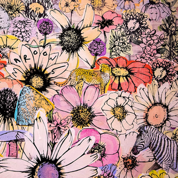

-
Jordi (2021)
This is the seventh and most recent album by the band, released on June 11, 2021. It is named after the band’s late manager, Jordan Feldstein, who died in 2017. The album features collaborations with various artists, such as Megan Thee Stallion, H.E.R., Stevie Nicks, and Juice WRLD. The album cover shows a close-up of Adam Levine’s face with a butterfly on his cheek. The track listing is as follows: Beautiful Mistakes (feat. Megan Thee Stallion)
- Beautiful Mistakes (feat. Megan Thee Stallion)
- Lost
- Echo (feat. blackbear)
- Lovesick
- Remedy (feat. Stevie Nicks)
- Seasons
- One Light (feat. Bantu)
- Convince Me Otherwise (feat. H.E.R.)
- Nobody’s Love
- Can’t Leave You Alone (feat. Juice WRLD)
- Memories
- Memories Remix (feat. Nipsey Hussle and YG)
-
Red Pill Blues (2017)

This is the sixth studio album by the band, released on November 3, 2017. The title refers to the concept of choosing between reality and illusion, as depicted in the film The Matrix. The album features guest appearances from SZA, Kendrick Lamar, Julia Michaels, A$AP Rocky, and Future. The album cover shows a pixelated image of the band members’ faces on a blue background. The track listing is as follows:
- Best 4 U
- What Lovers Do (feat. SZA)
- Wait
- Lips On You
- Bet My Heart
- Help Me Out (with Julia Michaels)
- Who I Am (feat. Lunchmoney Lewis)
- Whiskey (feat. A$AP Rocky)
- Girls Like You
- Closure
- Denim Jacket
- Visions
- Don't Wanna Know (feat. Kendrick Lamar)
- Cold (feat. Future)
-
V (2014)

This is the fifth studio album by the band, released on September 2, 2014. The title is pronounced as “five”, and it marks the return of keyboardist Jesse Carmichael, who took a hiatus from the band during their previous album, Overexposed (2012). The album features singles such as Maps, Animals, Sugar, and This Summer’s Gonna Hurt Like a Motherfucker. The album cover shows a neon sign of the letter V on a dark background. The track listing is as follows:
- Maps
- Animals
- It WasAlways You
- Unkiss Me
- Sugar
- Leaving California
- In Your Pocket
- New Love
- Coming Back for You
- Feelings
- My Heart Is Open (feat. Gwen Stefani)
- This Summer's Gonna Hurt Like a Motherfucker